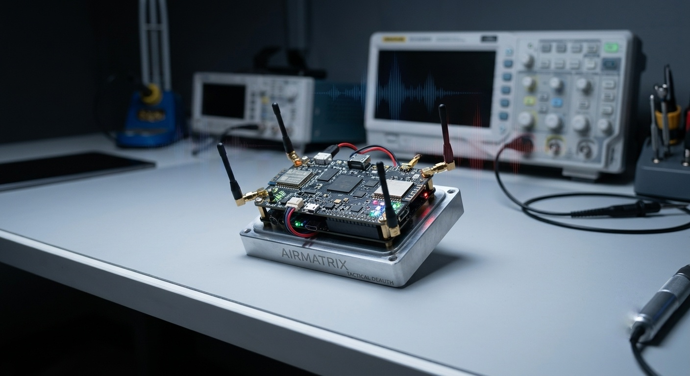
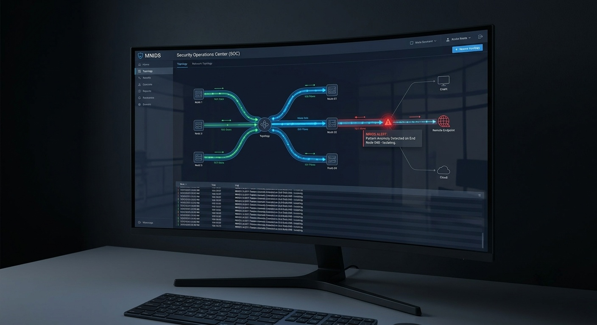
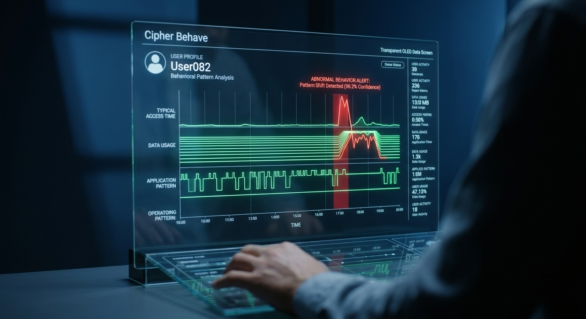
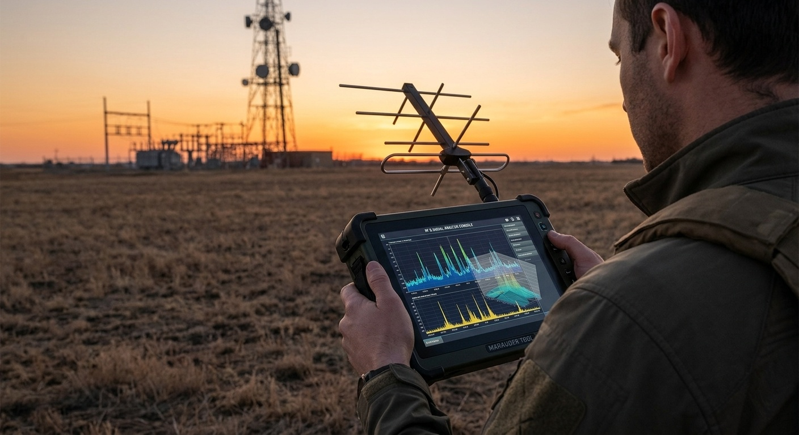

Projects
Airmatrix
A custom engineering hardware project designed to audit wireless infrastructure footprint boundaries. It functions efficiently as a tactical Wi-Fi and Bluetooth deauthentication platform, mapping out defense verification vectors against signaling jamming mechanics.

MNIDS
A Mini Intrusion Detection System structured to flag unusual behavior profiles across system network pipelines. This framework processes inbound packets dynamically to protect core node infrastructure from unexpected anomalies.

Zerolock Security Framework
A dedicated defensive infrastructure paradigm adhering strictly to zero-trust principles. It isolates critical data endpoints while ensuring strict continuous identity authentication mechanics are verified system-wide.
SQL Injection Payload Detector
An algorithmic analysis utility designed to look closely at web requests for common database attack strings. It isolates malicious inputs before data management software layers parse dangerous payloads.
Cipher Behave
An advanced activity auditing engine that actively monitors, collects, and analyzes user interactions across system nodes. By building normal operations baselines, it catches internal security threats or credential abuse through live behavior pattern shifts.

Marauder Tool
An ongoing specialized hardware research framework engineered to handle deep tactical RF, radio spectrum, and physical infrastructure signal evaluation metrics.
